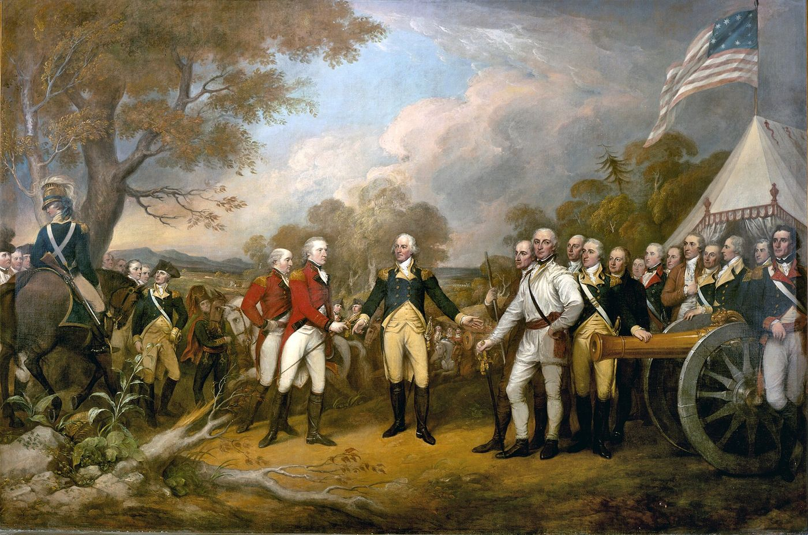
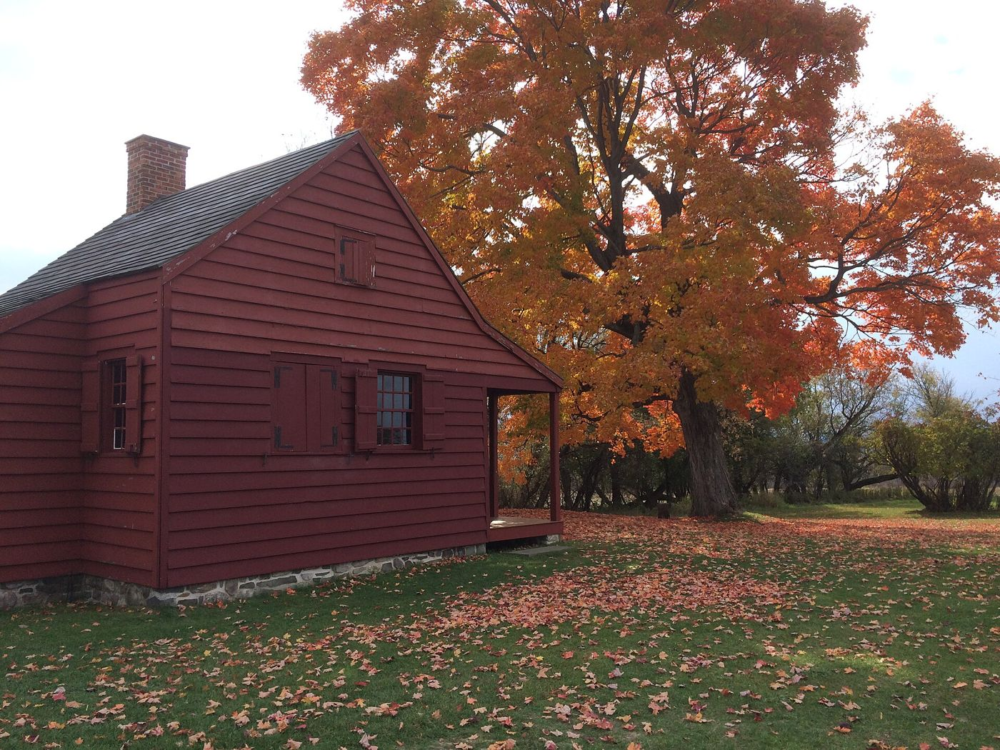
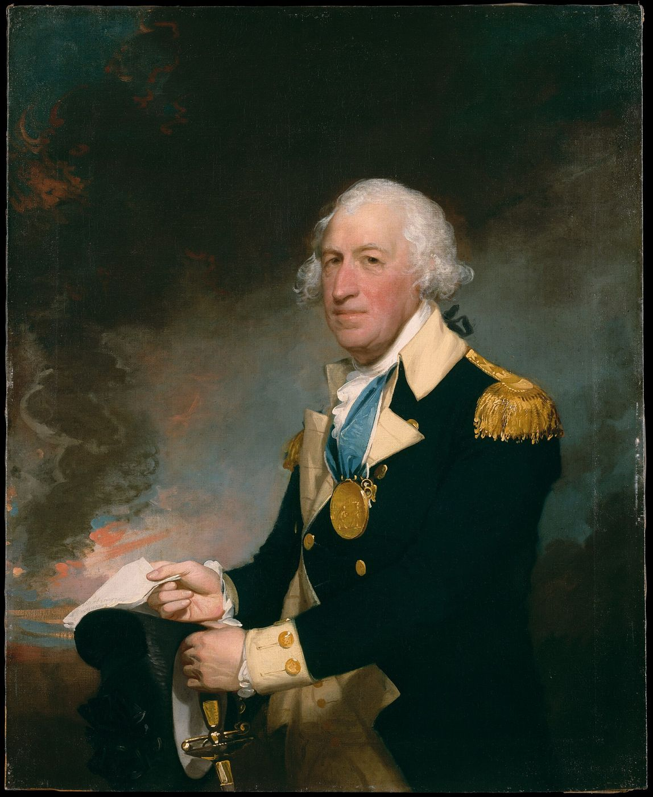
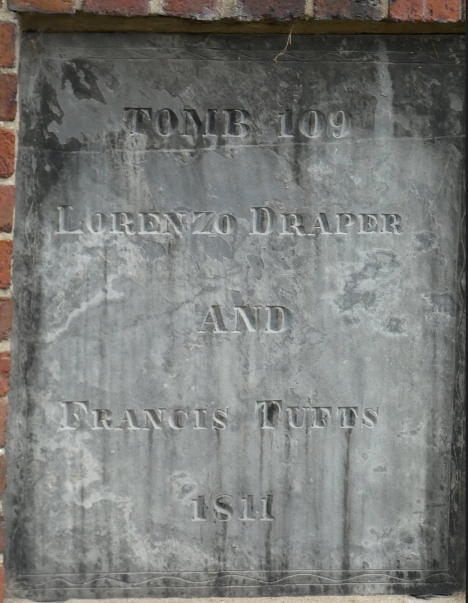

Biography
At Saratoga, Francis Tufts picked up the Continental flag from a fallen standard-bearer and led his company into battle with it. Gen. Horatio Gates noticed, and he was made an ensign on the spot. After the war he ran a distillery in Boston, on the lane that came to be called Tufts Street.
Service Record
Town: Lancaster; Boston · Dates: 1756 – 1823
Born 8 May 1756 in Lancaster, Mass.; died 18 Aug. 1823 in Boston; distiller. (Tufts Kinsmen, Vol. I, p. 160, family no. 41-4; owner-supplied extract; page scan not on file)
Private and sergeant under Capt. Isaac Hall and Capt. Ephraim Wheeler, Col. Jackson’s Regiment; later adjutant. (Tufts Kinsmen, Vol. I, p. 160, family no. 41-4; owner-supplied extract; page scan not on file)
At the Battle of Saratoga he recovered the Continental flag from a fallen standard-bearer and led his outfit into battle waving it; noticed by Gen. Horatio Gates and promoted to Ensign; promoted Lieutenant 1779. (Tufts Kinsmen, Vol. I, p. 160, family no. 41-4; owner-supplied extract; page scan not on file)
After the war lived on Essex Street, Boston, below the Liberty Tree near Kingston Street, where he set up a distillery; the lane became Tufts Street. Buried in tomb 109, Granary Burying Ground. His army dispatch case was found by a junk dealer and turned over to the Massachusetts Historical Society. (Tufts Kinsmen, Vol. I, p. 160, family no. 41-4; owner-supplied extract; page scan not on file)
Family Connection
Family number 41-4 in Tufts Kinsmen, Vol. I. Parents are not named in the extract seen.
Spouse(s)
Not found in the sources checked (Brooks 1855 Register of Families; Wild; Find a Grave data on file; Tufts Kinsmen Vol. I extract).
Authoritative IDs / Index Numbers
| Source | ID / status |
|---|---|
| Perseus person index (auth=) | auth=tufts,francis. This is a name-level key shared by every Francis Tufts in Perseus, not a personal ID. Use it with the passages cited on this page. |
| Find a Grave memorial | 21755667 (dates and family checked) |
| Brooks, History of Medford (1855) register no. | Checked, no entry confidently matched |
| Tufts Kinsmen, Vol. I family no. | 41-4 |
| Mass. Soldiers and Sailors | Not yet checked for this page |
| DAR ancestor no. | Not yet checked (the DAR GRS needs a browser session) |
| FamilySearch ID | Not yet checked (FamilySearch is blocked from this machine; owner to check) |
| Geni profile | Not yet checked (Geni requires sign-in) |
| WikiTree ID | Not yet checked (WikiTree API refused requests on 3 Nov. 2026: rate limit) |
| Town / vital records | Medford VRs not yet checked by volume and page |
Only IDs confirmed against dates and family are given as matches. “Not yet checked” means the source has not been searched; “Checked, not found” means it was searched without a match.
⚑ Unverified
The Saratoga flag story is as given in Vol. I; its own sources are not named in the extract. The Tufts Kinsmen Vol. I statements on this page come from an extract supplied by the owner and have not yet been checked against a page scan (citation rule: page scan not on file). No other source on this site has yet been checked for this man.
Pictures









Find a Grave
Find a Grave memorial 21755667. As given there (secondary; not checked against original records): Died 18 Aug 1823; birth not given (inscription “67yrs”). Granary Burying Ground, Boston, Tomb 109. Children William Tufts (1797–1855) and Elizabeth Andrews Tufts Draper (d. 1867).


Further Research Links
Outside resources for further research. Secondary and user-contributed sites (blogs, family trees, memorial sites, Wikipedia) are not verified here.
- full PDF / Full digitized book (pp. 20, 80 reference Saratoga flag heroism and biography) (Internet Archive)
- All The Tufts Revolutionary Soldiers – Francis Tufts (Lt.) service history (Tufts Genealogy blog) Secure (https) version listed separately.
- All The Tufts Revolutionary Soldiers – Francis Tufts (Lt.) service history (Tufts Genealogy blog)
- Orderly Books kept by Lieutenant Francis Tufts, Adjutant, 8th Massachusetts Regiment (1777–1783) (Massachusetts Historical Society)
- 8th Massachusetts Regiment (Continental Army) (Wikipedia)
- Battles of Saratoga (October 7, 1777 charge at Breyman’s Redoubt) (Wikipedia)